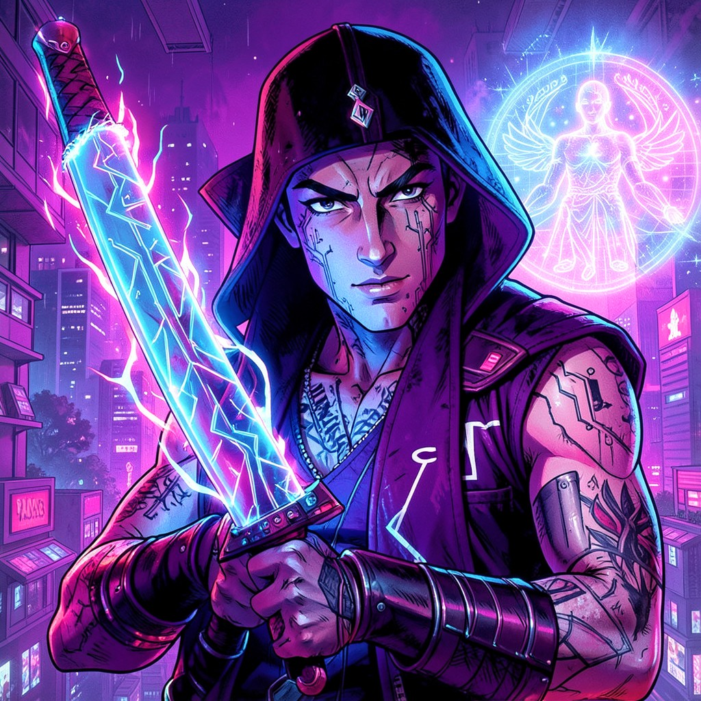

NEON SAMURAI
CYBERNETIC RONIN • NEON ORACLE PREDICTED MY DEATH • I DISAGREED
|
 NEON SAMURAI • VA
|
ESSENTIAL DATATrue Name: Kenji Sato (Redacted) Handle: Faction: Virtual Adepts Rank: Solo Operator / Ronin Digital Web Coordinates: Mobile (Neon-lit) Status: ACTIVE • HUNTING |
ATTRIBUTES
| Physical | Social | Mental |
|---|---|---|
| Strength: 3 | Charisma: 3 | Perception: 4 |
| Dexterity: 5 | Manipulation: 2 | Intelligence: 4 |
| Stamina: 4 | Appearance: 3 | Wits: 4 |
ABILITIES
| Talents | Skills | Knowledges |
|---|---|---|
| Melee 5 | Computer 4 | Bushido (Code) 4 |
| Dodge 4 | Firearms 4 | Cybernetics 3 |
| Alertness 4 | Security Systems 3 | Tactics 4 |
| Expression 2 | Stealth 4 | Neon Oracle Lore 3 |
| Yakuza Politics 2 |
SPHERES
| Sphere | Rating | Specialty |
|---|---|---|
| Forces | ●●●● | Neon Energy, Plasma Blade, EM Shield |
| Correspondence | ●●● | Flash Step, Network Teleport |
| Life | ●● | Cybernetic Enhancement, Reflex Boost |
| Entropy | ●● | Probability Blade, Critical Hits |
BACKGROUNDS
- Resources: ●● (Stolen Corp Credsticks)
- Node: ●● (Cybernetic Implants)
- Contacts: ● (Neon Oracle Avatar)
- Allies: ● (Zero Cool - Sometimes)
- Artifact: ●●●● (Monofilament Katana: "NEON")
MERITS & FLAWS
| Merits | Flaws |
|---|---|
| Ambidextrous (1pt) | Death Prediction (3pt) |
| Cybernetic Reflexes (3pt) | Ronin (No Backup) (3pt) |
| Neon Sight (2pt) | Honor Code (2pt) |
PERSONAL HISTORY
Kenji "Neon Samurai" Sato was a Yakuza enforcer who Awakened during a hit on a Virtual Adept safehouse. The target—a girl half his age—didn't fight. She hacked his cybernetics. Mid-swing, his monofilament whip turned into flowers. He spared her. She recruited him.
The Neon Oracle predicted his death: "404: Life Not Found. ETA: 1999." He checked the prediction daily. It updated: "200: Life Extended. Condition: Defy Fate." He took it as a quest.
His katana, "NEON," is a Virtual Adept artifact: monofilament edge, plasma sheath, WiFi-enabled. It cuts through ICE like butter. He carries the Neon Oracle's avatar on a holographic projector—she speaks in HTTP codes only he understands.
CURRENT AGENDA
- Find and destroy the "404: Life Not Found" source
- Protect the Neon Oracle's physical server (Tokyo)
- Defy every death prediction. All of them.
- Teach Zero Cool that code > steel (He disagrees)
RELATIONSHIP MAP
| NPC | Relationship | Notes |
|---|---|---|
| Neon Oracle | Patron / Guide | Only one who predicts his future. He trusts her absolutely. |
| Zero Cool | Rival / Respect | Zero Cool: "Code wins." Neon: "Steel cuts code." They test it. |
| Acid Burn | Tech Support | She maintains NEON. He brings her Yakuza encryption keys. |
| Navigator Hana Sato | Possible Relative | Same surname. Same eyes. Neither acknowledges it. |
DIGITAL WEB COORDINATES
- Primary Node:
va.neon_samurai.ronin.mobile - Dead Drop:
alt.cyberpunk.ronin(Usenet, encrypted) - IRC Channel:
#neon_blade(EFNet, he idles) - Onion Mirror:
neonsamuraix9k3m.onion(Tor)